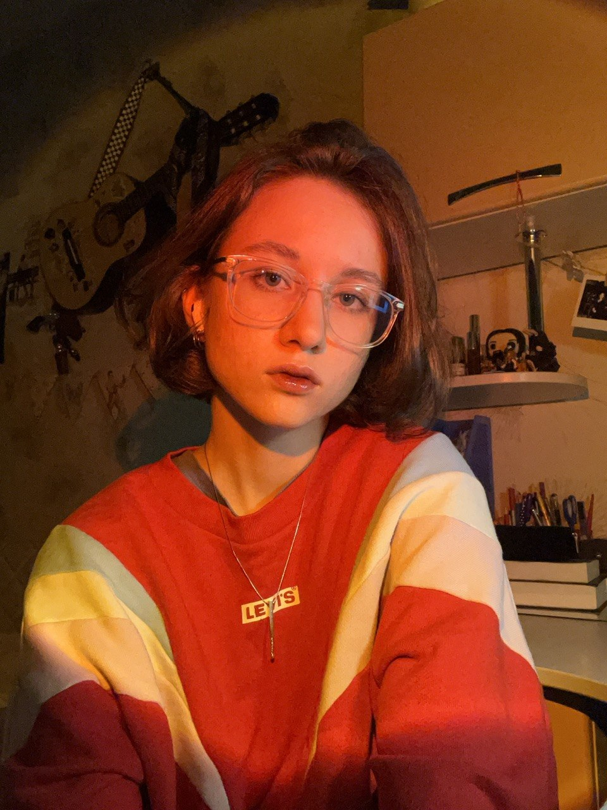
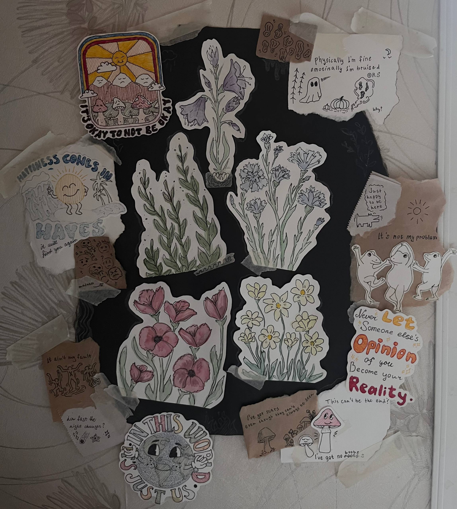
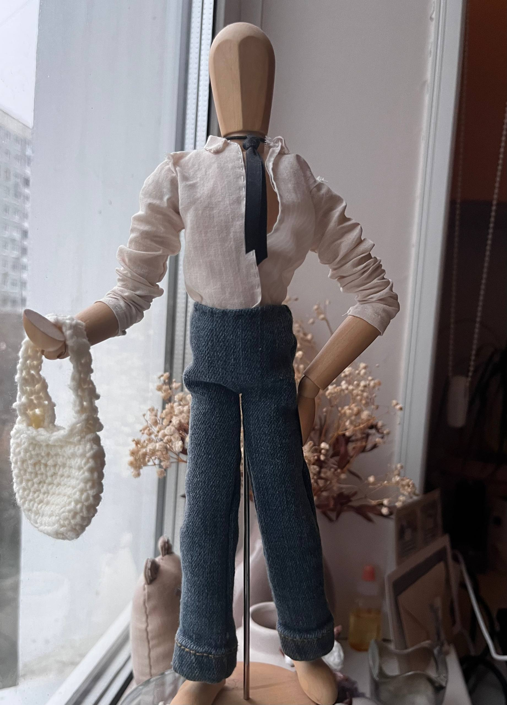
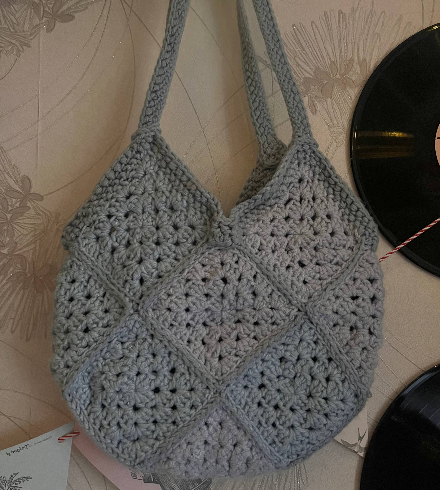
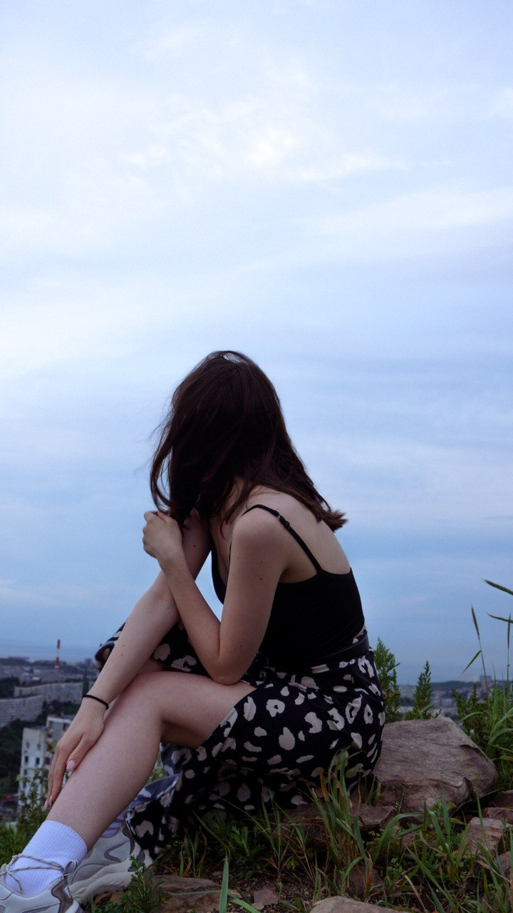
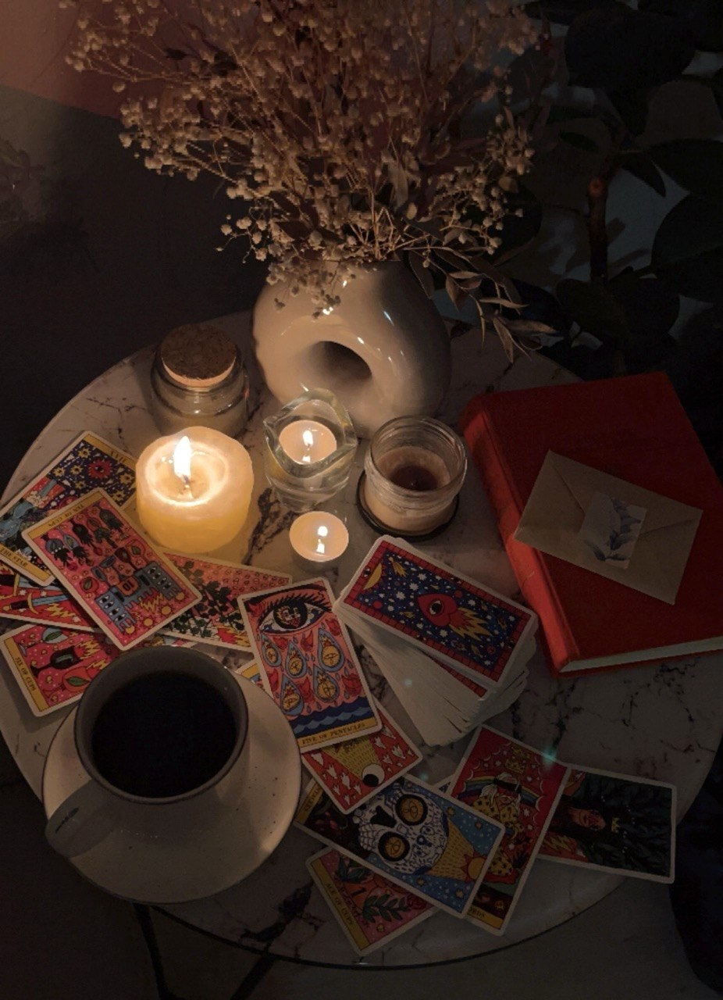
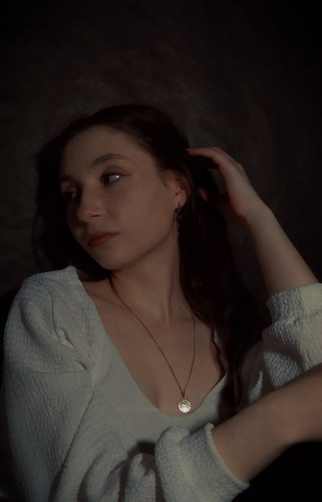
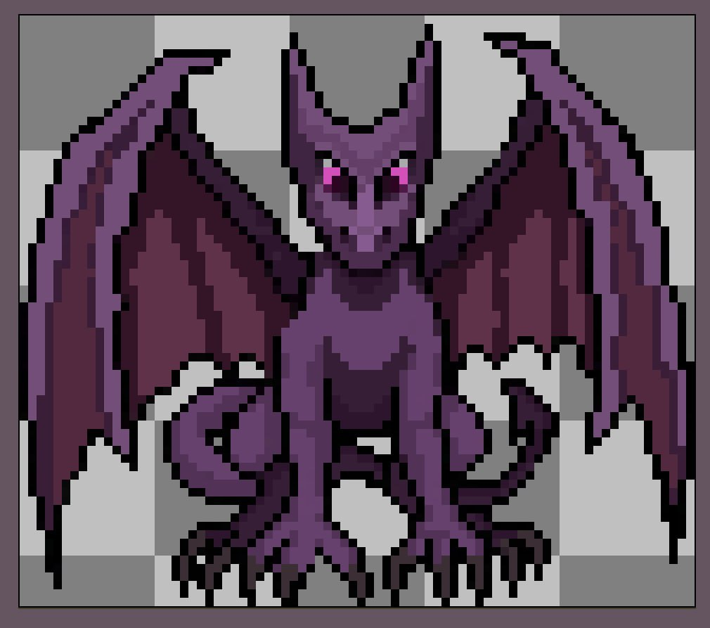

✨ Обо мне
Учусь на прикладной математике и информатике, разбираюсь с тем, как превращать код в работающие штуки.
Всё остальное время — это крафт, пиксель-арт, фотография, музыка и попытки сделать все вокруг красивым.
До универа я почти не кодила, так что сейчас для меня это во многом исследование: лабы, домашки, и попытки собрать всё так, чтобы не развалилось.
Когда нужно отдохнуть после дедлайнов — ухожу наводить порядок на ферме в Stardew Valley, перебирать материалы для крафта или просто слушать музыку.
🧵 Творчество и хобби
Люблю пробовать разные увлечения и создавать что то руками. У меня нет одного единственного хобби: я рисую, вяжу крючком и шью, а так же мне нравится лепить.
Одежда для деревянного манекена и мелкие текстильные штуки. Масштаб крошечный, но проблем с выкройками и швами больше, чем с обычными вещами.
Вязать научилась в 14 лет летом у бабушки дома. Теперь когда хочется чем то занять руки, разгрузить голову, а так же сделать подарки близким сажусь за вязание.
Рисую я с самого детства. Люблю собирать композиции из обрывков и делать рисунки на бумаге как в графике так и красками.
Моя единственная пока 3D-модель вышла довольно корявой, но было интересно посмотреть как это все работает, Делала я ее для проекта в школе.



📷 Фотография
Фотографирую всё, за что цепляется глаз: свет из окна, красивые закаты, удачный ракурс, мелкие детали. Люблю тёплые, чуть зернистые кадры, портретные съемки, и живые моменты.
Особенно часто фотографирую свою подругу в качестве модели.



🎮 Художник для игры
Рисовала 2D-графику для игры на пд: мобов, предметы окружения и боссов. Это был интересный первый опыт рисования в пиксель-арте.
Каждая анимация и деталь рисовались мной вручную.

Рисовала всё покадрово в Aseprite. Начинала с более простых форм и текстур, переходя уже на более сложные объекты и анимации.
Тот самый финальный дракон. (спойлер, в игру он так и не попал)
🎧 Что играет в наушниках
Альтернативная музыка, рок, что то спокойное и меланхоличное, а так же поп хиты 90' и 00'
Может показаться что я меломан, но на самом деле у меня просто очень много музыки под разное настроение
Иногда в компании близких людей или когда нахожусь одна дома могу петь любимые песни (бедные соседи)